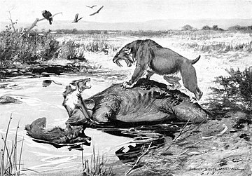

Dire Wolves were as big as the largest gray wolves of today. it had smaller feet and a larger head when compared to gray wolves of the same size. Its jaw and teeth were built to make its bite force very strong. It weighed on average 60 kilograms or 132 pounds. There are changes in its skull based on fluctuations and geographical differences.